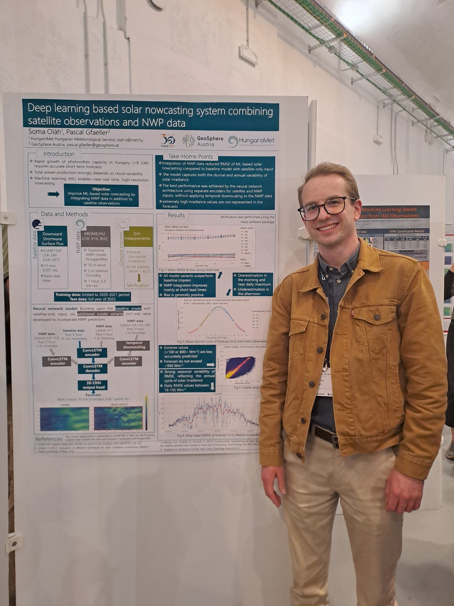

Machine Learning
Deep learning, model development, evaluation and data-driven forecasting.
Machine Learning · Scientific Computing · Geoscience
Soma Oláh
I develop data-driven solutions for weather forecasting and Earth sciences, combining domain knowledge with machine learning, scientific Python and operational computing.
01 / Profile
My background spans geophysics, meteorology-oriented machine learning and software development. I work best on problems where understanding the physical system is as important as building the computational solution.
Deep learning, model development, evaluation and data-driven forecasting.
Atmospheric science, geophysics, hydrogeology, remote sensing and NWP.
Large geoscientific datasets, reproducible analysis and operational workflows in cloud and GPU environments.
02 / Current work

Current work · HungaroMet · 2024—present
I contribute to the development of a machine-learning-based solar nowcasting system at HungaroMet, working with satellite observations, numerical weather prediction data and scientific ML workflows.
Research foundation · ELTE, Budapest · 2022—2024
As a researcher in the Climate Change Multidisciplinary National Laboratory project, I worked on groundwater-flow and hydrogeological problems through numerical modelling, field geophysical measurements, GIS and scientific data analysis.
I also contributed to the conceptual development and scientific communication of NaBa-MAR® (Nature-Based Managed Aquifer Recharge), an ELTE innovation connecting managed aquifer recharge with groundwater-flow systems.
03 / Technical expertise
PyTorch · Deep Learning · ConvLSTM · Model Evaluation · pandas · NumPy · R
Python · xarray · NetCDF4 · Zarr · GDAL · Matplotlib · hvPlot
Satellite Data · NWP · Nowcasting · Remote Sensing · Geophysics · Hydrogeology · GIS
Linux · Git · Cloud · HPC/GPU · S3 · ecFlow · Operational Data Pipelines
Additional experience: R, SQL, MATLAB, Bash, Java, C/C++, C#, JavaScript and other programming languages.
04 / Experience
HungaroMet Hungarian Meteorological Service · Budapest, Hungary
Machine-learning nowcasting, large satellite and NWP datasets, scientific Python, cloud/HPC computing and operational ML workflows.
Climate Change Multidisciplinary National Laboratory · Budapest, Hungary
Groundwater-flow research, numerical modelling, field geophysics, GIS and hydrogeological data analysis.
05 / Scientific activity
06 / Education
Eötvös Loránd University (ELTE) · Budapest, Hungary
Faculty of Informatics · Software Development specialisation
Eötvös Loránd University (ELTE) · Budapest, Hungary
Faculty of Science · Geophysics specialisation
2025 · Reading, United Kingdom
European Centre for Medium-Range Weather Forecasts (ECMWF)
Selected training
ECMWF Machine Learning for Earth System Modelling · PyTorch training · Advanced Python training · Git training
07 / Community
08 / Contact
I'm interested in opportunities at the intersection of machine learning, weather and Earth sciences. If you work on weather intelligence, ML-based forecasting, Earth observation or scientific computing, I'd be happy to talk.